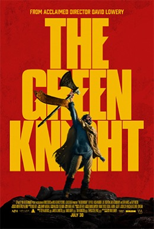

Review · written 5 October 2026
The Green Knight
It is a tale as old as time. Well…not really. Actually, the tale of Sir Gawain and his encounter with the green knight is thought to date back only to the 14th century. Yet it is one of the most well-remembered stories of the “Arthurian” and “Round Table” canon, and thus encapsulates and imparts human concepts and principles so undeniably important to us that they may well be as old as time—or as “our time”, at least.
The classic version of this apocryphal tale speaks on the importance of transparency, honour, and integrity. On a cold New Year’s Eve, while the knights were feasting in the great banqueting hall, the castle’s stone walls were suddenly filled by a gust of chilling air. A green knight of tremendous stature rode into the hall, held up his giant axe, and offered up a challenge: “Who dares to strike me with one blow of this axe, provided he abide a strike from me?”
Sir Gawain, one of the round table’s knights, answered the call. In an effort to pre-empt the Green Knight’s response blow, Gawain struck with all of his force, beheading him in the process. Tremendous relief overwhelmed him until the knight’s headless body began to move again. Grasping its decapitated head, a laughing bellow spoke: “If you are no coward, I will see you at my chapel in a year’s time, sir Gawain, where you will receive my strike in return”.
The following year, Gawain set off on his journey to find the green knight’s chapel. On his way, he comes across a castle of a lord and his lady. They invite him to stay and rest before his appointment with the green knight. Meanwhile, the lord presents him with a bargain: after his daily hunt, he will provide Gawain with the greatest catch if Gawain provides him with whatever he may gain during the day in return.
Over the following days, the lord’s wife repeatedly attempts to seduce Gawain, who doth not give in, apart from giving her a kiss—which he then, in turn, gives to the lord, while keeping its origin secret. On the final day of his stay, Gawain again refuses the lady’s advances, but accepts from her a sash which is said to protect him from any physical harm. Yet upon meeting the lord, Gawain omits mention of this gift, thereby breaking the bargain, and proceeds to meet his fate.
Gawain bends his bare neck, ready to receive the blow and die from it, but the axe’s swing leaves him with but a minor wound. The knight then reveals himself to be the lord of the castle, transformed, through magic, by Morgan Le Fay—king Arthur’s witch step-sister. Gawain’s stay at the castle was thus a test, and the nick in his neck a result of his deceit in failing to disclose the protective sash, while his otherwise honourable nature spared him from a complete beheading. Gawain, ashamed of his lack of transparency, takes the sash to Camelot and shares the story with the Round Table as a reminder of the importance of honesty.
The Green Knight, as written and directed by David Lowery, manipulates several parts of the original poem’s story, and is, in this sense, I think a very interesting re-telling. Here, Gawain is not an otherwise honourable knight who commits a slight dishonesty; he is a persistently cowardly man who changes by making an honourable decision. For instance, during his journey to the green chapel, he is robbed by bandits and proceeds to beg for mercy - not very “knightly” behaviour. When seduced by the lady of the castle, he gives in almost instantly and is completely dishonest when asked about his gains by the lord. Yet when the green knight’s returning blow is imminent, we see Gawain have a vision of the future, a vision where his protection by the sash’s magic leads to the downfall of not only his honour, but of the kingdom under his reign, his future family, and ultimately, his head. Honourably, then, Gawain asks the knight to wait for him to remove the magical sash and, thus, his protection. In this version, it is this last-minute redemptive action that saves Gawain’s life.
Another point this picture gets right is its cinematography and shooting locations. There are several shots here that are absolutely stunning to look at, and the movie has a very earthly feel—in that respect, like a time capsule into a past that never was. I also thought the performances were, generally, decent to good, given what the actors had to work with. But it is this “what they had to work with” that really brings this movie down for me.
The movie's conceptual changes are very interesting. The problem is that most of these narrative and intellectual subversions were lost on me while I was actually watching it. They became clear only post-viewing, when re-reading the original tale’s synopsis and looking through interpretations of the movie’s changes to it. During my viewing, I was often bored, confused, and busy trying to recall my past knowledge of the tale and how it did and didn't match what I was watching.
Whilst I argued in my most recent review that Resident Evil treated the audience like meatheads by having a character commentate on every event, this movie goes the opposite way, with a narrative that is wholly unclear in its presentation. One crucial change is that, instead of being King Arthur’s sister, here, Morgan Le Fay is Gawain’s mother. Yet this is never really made explicit. To my recollection, she is never addressed by that name, and the only clue we are given is that she is shown participating in some ritual near the beginning of the film, which I did not interpret as representing sorcery of any kind. Because my prior knowledge of her was that of an evil witch who lived far away and constantly tried to threaten Arthur through magic, I didn't think she played a part in this movie at all. I certainly didn’t know her as living among the townsfolk and being the mother of one of the knights. Here, the implication is that the conjuring of the Green Knight and his challenge, and the receipt of the physically protective sash, was a ploy by Morgan to ensure her son’s succession to Arthur’s rule of the throne.
These changes could be very, very interesting, and I enjoy them on an intellectual level. Yet, if even I, someone who already knew the gist of the original tale, couldn’t follow the changes made, I believe anyone who doesn’t will have an even harder time a) understanding and b) appreciating its narrative input. This, then, is a primary failing in the filmmakers' presentation. While the audience should not be treated patronisingly, it is equally important to ensure that the general premise can be followed by most. Otherwise, what follows is a confusing, irritating experience.
Aside from these narrative failings, the movie also felt quite pretentious and bloated at times. Scenes go on for a long time without demonstrating what this length “adds” to the story. This could be argued to contribute to its artistic form. But then there are other movies that do this much more effectively, all the while removing the classical narrative elements that typical movies with scripts and dialogue adhere to. The Green Knight seems to be stuck between a fringe arthouse movie and a sophisticated re-imagining of a famous story, without executing either particularly well.
This results in a conflicting review and consequently makes it hard for me to situate in terms of an overall rating. On the one hand, I admire the changes to the original telling and how the classic narrative was “turned on its head”. On the other hand, I was only able to appreciate those U-turns after watching the movie, and having its subversions and meanings be explained to me by someone’s “take” on the internet demonstrates a failure in its presentation. The movie makes use of gorgeous locations and is extraordinarily pretty to look at. Yet this visual spectacle can feel forced upon the viewer, with an unbearably slow pace and little substance to match its indulgence. Lastly, while I have seen the score praised by others, I must say I found it quite annoying, overbearing, and nothing special. The polyphonic, choir-like vocal swells felt particularly grating and have been quite overused (even before the film’s 2021 release!). Funnily enough, one of the first movies I remember hearing them in was Gareth Edwards’s 2014 Godzilla, where I actually thought they were used very effectively.
In summary, a stimulating narrative subversion must be conveyed by the viewing experience itself and cannot be expected to be part of the viewer’s homework pre- or post-movie-going. While I think The Green Knight fails as a movie, sitting at a 4/10, its intellectual appeal and cinematography bump it up to a 5/10. All in all, the idea is great, but the execution was lacking. Off with your head!
Poster: © A24.